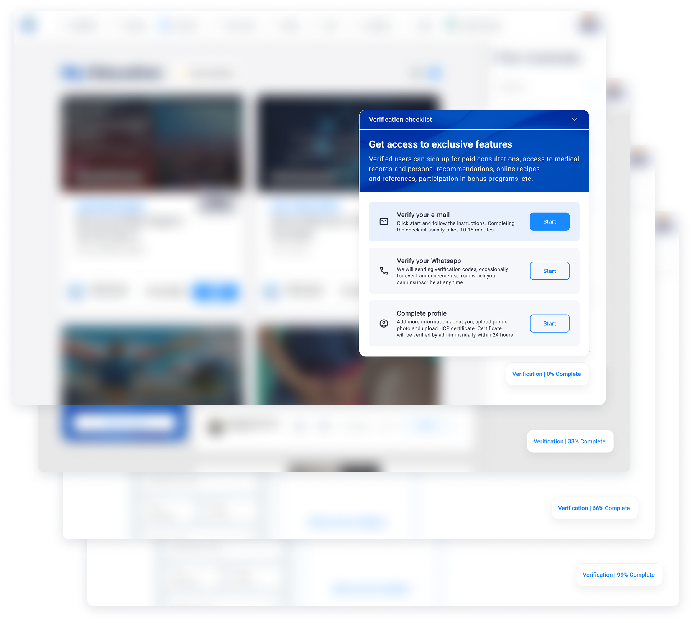

Контекст
Ко мне пришёл менеджер с проблемой: «Пользователи бросают верификацию, нужно улучшить экран». Никаких исследований, никаких данных — только факт: многие врачи не доходят до конца. Моя задача была — разобраться и предложить решение.
Визуализация

Процесс
Аудит
Я открыл текущий интерфейс и начал анализировать его.
Первое, что бросилось в глаза — при входе на любую страницу вылетает модальное окно с требованием «Подтвердите личность, чтобы открыть все возможности» и шаги, которые нужно пройти. Оно перекрывает контент, его можно только закрыть кнопкой «Позже». И так — каждый раз.
Я задал себе простые вопросы:
- Зачем пользователю это делать? Чтобы открыть «все возможности» — какие это возможности? Хочет ли пользователь эти возможности?
- Почему это вызывает раздражение? Окно вылезает постоянно, мешает работать, его можно только отложить, и оно вылезет при переходе на следующую страницу снова.
Гипотезы
- Гипотеза навязчивости. Если убрать всплывающие окна, которые перебивают пользователя, уровень раздражения снизится, и люди будут охотнее взаимодействовать с интерфейсом.
- Гипотеза прозрачности. Если честно объяснить, зачем нужна верификация и что пользователь за это получит, уйдёт страх и недоверие.
- Гипотеза прогресса. Если показать, что процесс состоит из нескольких шагов и визуализировать продвижение, у пользователя появится ощущение контроля и желание завершить начатое. А так как есть внутренняя валюта «медгемы», за которые можно купить скидки на курсы или подарочные сертификаты, то можно за каждый выполненный шаг верификации поощрять, даря «медгемы».

Проектирование
Я набросал концепцию, основанную на базовых принципах и гипотезах:
- Полностью убрал все всплывающие окна. Никаких поп-апов, которые перекрывают контент. Вместо этого — спокойный приветственный экран, который появляется один раз при первом входе и не мешает, если пользователь хочет отложить.
- Добавил объяснение выгоды. На этом экране крупно написал: «Подтвердите, что вы врач, и получите доступ к онлайн-рецептам, платным консультациям и персональным рекомендациям». Человек должен видеть, что он получит, а не то, что он должен отдать.
- Визуализировал прогресс. Разбил процесс на три понятных шага, после каждого шага шкала заполняется. Это даёт ощущение контроля и предсказуемости.
- Автоматизировал проверку. Убрал ручное подтверждение администратором, сделал автоматическую проверку документов по чек-листу, чтобы статус менялся сразу.
Презентация
Я подготовил презентацию с обоснованием каждого решения, опираясь на психологию и принципы когнитивного дизайна. Также предложил простой способ проверить эффективность: сравнить количество успешно верифицированных пользователей за месяц до внедрения и за месяц после. Передал через менеджера стейкхолдерам.
Результат
Менеджер вернулся с ответом: «Слишком много изменений, это долго и дорого. Давай сделаем проще — просто разобьём текущую модалку на несколько шагов».
Я пытался объяснить, что проблема не в длине, а в навязчивости и отсутствии мотивации, но моих аргументов не хватило. Стейкхолдеры решили, что «разбить на шаги» — это достаточное улучшение. Что в итоге и внедрили.
Выводы
Помимо самого дизайн-процесса, очень важно донести свои мысли, идеи и аргументы до бизнеса. Нужно больше внимания обращать на непосредственное общение со стейкхолдерами и презентацию своего дизайна им.